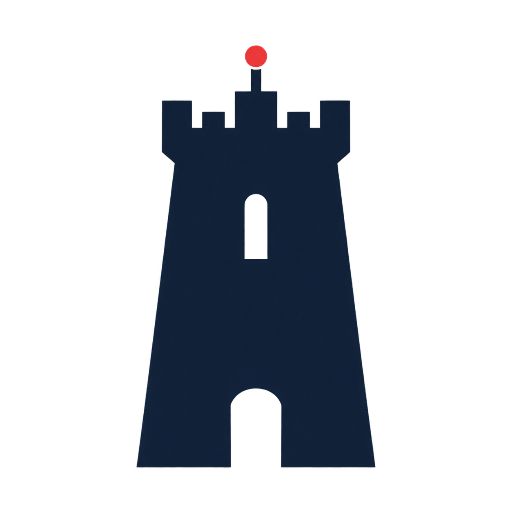

Network monitoring
& triage
Alarm review, fault investigation and incident prioritisation across the network systems included in your service scope.
VISIBILITY & FIRST RESPONSE

KULLANETWORKS Discuss your projectNETWORK OPERATIONS · DEDICATED TEAMS
Network operations built around your infrastructure. A dedicated engineering team that learns your environment and takes ownership of its agreed scope.
Discuss your project Explore our expertiseOne agreed scope. Clear escalation paths.
Accountability from the start.
01 / OUR EXPERTISE
Extend your network operations with an engineering team assigned to your project, working within agreed procedures and access controls.
Alarm review, fault investigation and incident prioritisation across the network systems included in your service scope.
Troubleshooting, escalation and coordination with your vendors and field teams. Clear handovers through your ticketing workflow.
Senior engineering support for agreed changes, documentation and network improvement projects, with technical scope confirmed upfront.
02 / BUILT AROUND YOUR NETWORK
A lasting working relationship starts with a precise brief. We define the team, responsibilities and service window together, then prepare for a controlled handover.
Business-hours, extended-hours or round-the-clock requirements can be scoped during discovery. Coverage, staffing, response targets and the service start date are confirmed before delivery begins.
Map your environment, workload, coverage requirements and escalation paths.
Match engineering skills to your network and confirm availability, responsibilities and the mobilisation plan.
Agree access, runbooks and handovers. Validate readiness before taking responsibility for live operations.
Use agreed service measures and regular reviews to refine the operation as your requirements evolve.
03 / THE PEOPLE BEHIND KULLA
Kulla brings together a Netherlands-based commercial cofounder and Kosovo-based network engineering leadership, supported by project-based engineering partners.
COFOUNDER · COMMERCIAL LEAD
Your point of contact for project requirements, the commercial relationship and aligning the service with your business.
COFOUNDER · TECHNICAL LEAD
A network engineer and technical lead, responsible for technical discovery, team selection and the delivery approach.
LET’S DEFINE YOUR NEXT PROJECT
Start with your network environment, the support you need and your preferred timeline. We’ll define the right scope and team from there.